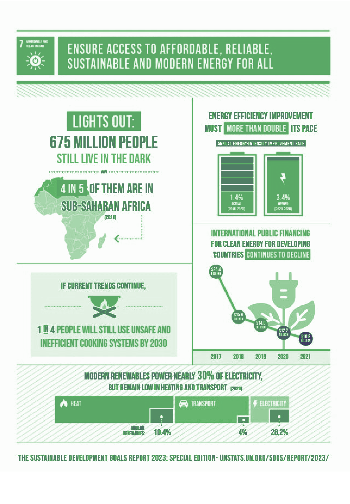

Energy is intergrated deeply into the modern world. For example, a lack of energy impede's the avaliablility of clean cooking. The current electricity domineer, fossil fuels is doing irreperabel damage to our enviornment.
Failing to meet the clean cooking targets by 2030 means 22% of the population will continue to suffer from pollution. Outside of that, quality of life for people without electricity is extremely poor. It's hard to obtain clean water, study or store vaccines.
The current consumption patterns of energy are driving climate change. The use of fossil fuels is the main contributor to climate change, and the current energy system is not sustainable. The world needs to transition to renewable energy sources to reduce greenhouse gas emissions and mitigate the impacts of climate change.